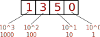
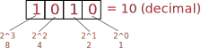
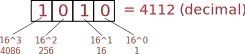

Dados Digitais¶
| Estudando | |
|---|---|
| Bibliografia | |
| [Cap 3,5. NISAN, 2005] | |
| [Cap 8,11,12. FLOYD, 2011] | |
| [Cap 7 TOCCI] | |
| Leitura extra: | |
| Introduction to Digital Systems - Cap. 1 | |
| Introduction to Digital Systems - Cap. 2 | |
| Vídeos (extra) | |
 |
|
| KhanAcademy | |
| Why Do Computers Use 1s and 0s? Binary and Transistors Explained. |
Primeiras Máquinas de Calcular
Wilhelm Schickard (1592–1635) construiu em 1623 uma calculadora para seu amigo astrônomo Johannes Kepler. Esta é a mais antiga calculadora mecânica conhecida de quatro funções, que foi descoberta por esboços da sua criação.

História
Blaise Pascal (1623-1662) inventou e produziu em 1642 a Pascaline. Ela só podia fazer adição e subtração, manipulando os números inscritos em seus mostradores. Ele construiu 50 deles ao longo de 10 anos, embora só tenha vendido 15.

Fonte: http://www.computerhistory.org/revolution/calculators/1/47
Primeiras Máquinas de Calcular
Gottfried Wilhelm von Leibniz (1646-1716) é creditado como um dos inventores do cálculo diferencial e integral. Porém, foi o primeiro a documentar e estudar profundamente o sistema binário de numeração (base 2). Em 1672 Leibniz começou a inventar uma máquina capaz de fazer as 4 operações aritméticas, o Staffelwalze.

Fonte: https://en.wikipedia.org/wiki/Gottfried_Wilhelm_Leibniz
Sistemas numéricos é a maneira como os seres humanos representam números, ao decorrer da história as civilizações assumiam maneiras diferentes de representar números, muitas vezes possuindo diferentes maneiras de codificar oralmente/escrito.
O sistema decimal é o mais utilizado pelas civilizações modernas, nele utilizamos 10 símbolos: 0, 1 ... 9 para representar qualquer número, essa notação remonta do fato de possuirmos 10 dedos em nossas mãos. Nesse sistema, cada digito possui um peso da ordem \(10^n\):

Algarismos indo-arábicos
O sistema de numeração hindu como a conhecemos hoje, pode ser atribuído a dois homens: o astrônomo Ariabata (आर्यभट) e seu pupilo Bhāskara I, durante 499-522 ac. Eles inventaram um sistema que se baseia na utilização da combinação de sílabas para formar os números, em um sistema incluindo a notação do zero.

Base 2¶
No sistema de base 2 possuímos apenas duas opções de símbolo: 0 e 1. Nessa base, cada posição possui um peso da ordem \(2^n\):

Dessa maneira podemos construir o valor que desejarmos de decimal (\(m\)) em binário, para isso será necessário ocupar \(ceil(log2(m))\) bits para armazenar o valor. A tabela a seguir ilustra algumas situações:
ceil: arredondar para cima
| Valor decimal | Bits necessário |
|---|---|
| \(0 .. 1\) | 1 |
| \(0 .. 3\) | ceil(log2(4)) = 2 |
| \(0 .. 4\) | 2 |
| \(0 .. 6\) | 3 |
| \(0 .. 7\) | 3 |
| \(0 .. 15\) | 4 |
| \(0 .. 31\) | 5 |
| \(0 .. 63\) | 6 |
| \(0 .. 127\) | 7 |
Supondo que possuímos um binário de três dígitos, um contador de 0 a 7 em decimal seria em binário: 000 -> 001 -> 010 -> 011 -> 100 -> 101 -> 110 -> 111 ... . O número 45 em binário é 0b101101:
| 5 | 4 | 3 | 2 | 1 | 0 | posição |
|---|---|---|---|---|---|---|
| 2^5 | 2^4 | 2^3 | 2^2 | 2^1 | 2^0 | peso |
| 32 | 16 | 8 | 4 | 2 | 1 | valor |
1 |
0 |
1 |
1 |
0 |
1 |
número binário |
Tip
Não tem muito segredo, para interpretar números binários facilmente é necessária prática!
Tip
Para saber qual o valor máximo de decimal que é possível armazenar com \(n\) bits:
\(0 .. 2^n-1\)
Nomenclatura
Iremos utilizar os prefixos:
: Para indicar um número em decimal0b: Para indicar um número em binário0x: Para indicar um número em hexadecimal
Exemplo:
hex bin dec
0x100 != 0b100 != 100
Definições¶
Em muitas linguagens de programação é necessário definirmos o tamanho da variável que iremos armazenar um dado, para facilitar o entendimento damos nome a quantidade de bits que ela irá ocupar:
- 4 bits: nibble
- 8 bits: byte
- 16 bits: halfword
- 32 bits: word
Conversão Decimal <-> Binário¶
Existem diversas técnicas de conversão binário  decimal, a seguir detalhes de como realizar essas conversões, o segredo é entender os pesos de cada casa de um
decimal, a seguir detalhes de como realizar essas conversões, o segredo é entender os pesos de cada casa de um bit no sistema binário e então fazer a conta inversa.
Base 16¶
A base 16, ou hexadecimal, é outra maneira de representarmos números utilizando não só 2 ou 10 símbolos como acabamos de ver, mas 16 símbolos! É como se conseguimos representar o valor 10 com um único carácter, no caso iremos utilizar o A.
Nessa base, cada unidade possui um peso na forma \(2^{16}\):

Um contador no formato hexadecimal possui a seguinte forma:
| Decimal | Binário | Hexadecimal |
|---|---|---|
| 0 | 0000 | 0 |
| 1 | 0001 | 1 |
| 2 | 0010 | 2 |
| 3 | 0011 | 3 |
| 4 | 0100 | 4 |
| 5 | 0101 | 5 |
| 6 | 0110 | 6 |
| 7 | 0111 | 7 |
| 8 | 1000 | 8 |
| 9 | 1001 | 9 |
| 10 | 1010 | A |
| 11 | 1011 | B |
| 12 | 1100 | C |
| 13 | 1101 | D |
| 14 | 1110 | E |
| 15 | 1111 | F |
| 16 | 0001 0000 | 10 |
Base 16 ↔ Base 2¶
A conversão de número na base 16 para a base 2 e vice-versa acontece de forma trivial. Da base 2 para a base 16 basta separar os bits da palavra em unidades de 4 casas e então realizar a conversão de cada grupo de 4 bits para o seu equivalente em Hexa. Para a conversão de hexa para binário, basta converter cada símbolo de hexa para o seu equivalente em binário (4 dígitos), seguindo a tabela anterior.
Exemplos:
a) 0xA01 para binário:
A 0 1
| \ \
| \ \
1010 0000 0001
-> 0b1010_0000_0001
b) 0b1111_0101_1000 para hexa:
1111 0101 1000
| | |
| | |
F 5 8
-> 0xF58
Base 16 ↔ Base 10¶
Para converter de Hexa para Decimal basta aplicar os pesos em cada um das unidades, como demonstrado a seguir:
a) 0xA01 para decimal:
A 0 1
| | |
| | |
A.16^2 0.16^1 1.16^0
-> 10.256 + 0.16 + 1.1 = 2561
Para alterar a base de Decimal para Hexa, uma das soluções mais triviais é a de converter primeiro para binário e então agrupar os bits de 4 em 4 e converter para hexa:
Decimal -> Binário -> Hexa
b) 42 -> 0x ???
32 + 8 + 2 = 42
\ | / ---------------
\ | / | |
\ | / | v
42 -> 0b101010 -> 0010 1010 -> 0x2A
| ^
| |
----------
----|----
|
Blocos de 4 bits
Base 8¶
Similar as outras bases de número, o sistema octal é composto por 8 símbolos: 0 .. 7, e nele cada posição possui valor na forma de: \(8^n\). Veja o exemplo a seguir:
a) 137 em octal para decimal: \(1.8^2 + 3.8^1 + 7.8^0=95\)
| 2 | 1 | 0 | posição |
|---|---|---|---|
| 8^2 | 8^1 | 8^0 | peso |
| 64 | 8 | 1 | peso |
1 |
3 |
7 |
valor octal |
| 1*64 | 3*8 | 7*1 |  \(64+24+7=95\) \(64+24+7=95\) |
Para representarmos um valor octal em binário, é necessário reservarmos 3 bits para cada símbolo do número octal, a conversão é feita como no sistema hexadecimal, porém aqui separando blocos de 3 bits:
b) 137 para binário:
001 011 111
O sistema octal é utilizado no Linux para permissões de arquivos onde são necessários 3 bits para controlar se um usuário possui: acesso de leitura, escrita e/ou execução de um determinado arquivo:
| Permission | rwx | Binary | octal |
|---|---|---|---|
| read, write and execute | rwx | 111 | 7 |
| read and write | rw- | 110 | 6 |
| read and execute | r-x | 101 | 5 |
| read only | r-- | 100 | 4 |
| write and execute | -wx | 011 | 3 |
| write only | -w- | 010 | 2 |
| execute only | --x | 001 | 1 |
| none | --- | 000 | 0 |
Para modificar a permissão de um arquivo no linux é necessário fornecer a informação para três grupos diferentes: usuário, grupos na qual o usuário faz parte e qualquer outro user. Para isso basta escrever no terminal:
/ others
/
$ chmod 754 FILE
| \
| \ group
user
Isso da permissão de:
- user: read/write/execute
- group: read/execute
- others: read
Povos
Alguns povos da América do Norte, México e Europa utilizam o sistema octal, pois consideram a quantidade dos vãos dos dedos e não os dedos propriamente.
Fonte: https://en.wikipedia.org/wiki/Octal#By_Native_Americans
Início da computação
Para que serve o sistema octal? No começo da computação a IBM possuía memórias com: 6-bit, 12-bit, 24-bit e 36-bit. Sendo todas as unidades divisíveis por 3, o que facilita a interpretação em um sistema octal.
Outros sistemas¶
Existem inúmeras maneiras de codificação de números e/ou caracteres diversos, as mais utilizadas são:
- BCD
- ASCII
- UTF-8
BCD¶
No sistema Binary-coded decimal (BCD) cada unidade de um sistema decimal é convertido para 4 bits, muito parecido com a conversão para Hexadecimal. Ele é muito utilizado em relógios e quando há a necessidade de exibição do valor em decimal em binário (Display de 7 segmentos).
- Exemplo,
356em BCD:
3 5 6 : Decimal
0011 0101 0110 : BCD
ASCII¶
ASCII (do inglês American Standard Code for Information Interchange; "Código Padrão Americano para o Intercâmbio de Informação") é uma maneira de codificar em binário (8 bits) 95 sinais gráficos (letras, símbolos e números) e alguns sinais de controle. É muito utilizada pelos programas para armazenarem 'caracteres' e 'strings'.

Fonte: www.asciitable.com
Por exemplo, a palavra Insper convertido para ASCII fica da seguinte maneira (em decimal):